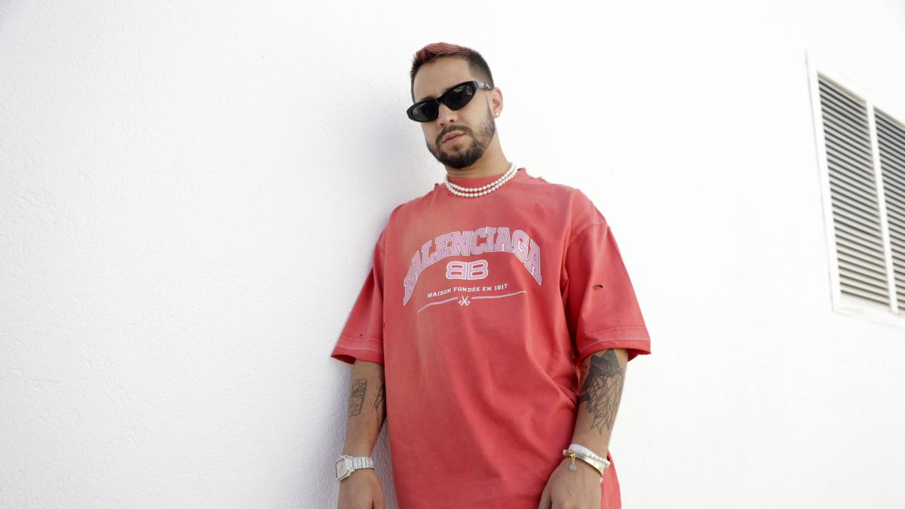

Mora
La Inocente, 20 may 2022
Gabriel Armando Mora Quintero (Bayamón, 18 de abril de 1996), conocido simplemente como Mora, es un Cantante, Compositor y Productor musical puertorriqueño. Es reconocido por producir, componer y Colaborar en sencillos como «"Una Vez" con Bad Bunny», «"512" Con Jhay Cortez», «"Inocente" con Feid», «"Volando Remix" Con Bad Bunny y Sech», «"Pensabas" con Eladio Carrion, Brray y Joyce Santana», «Tuyo» entre otros. Recientemente estrenó su tercer álbum Paraíso (2022).
Se incursionó en la música en el año 2017, uno de sus primeros sencillos se título «Provocándome». Le siguió, ese mismo año, «Señorita» junto a Rafa Pabön y luego vino el exitoso remix de «Pensabas» con Eladio Carrión, Brray y Joyce Santana. Los éxitos no pararon ahí. Como independiente, Mora también lanzó «Nunca seremos», «Hasta cuándo» y «Noche loca». Posterior a estos lanzamientos, el artista puertorriqueño firmó contrato con Rimas Music en 2018.
Este cantante en mi opinión, es algo distinto a los cantantes que se escuchan en la actualidad, ya que sus canciones son muy del estilo actual, pero las letras y los temas son muy parecidas a las antiguas utilizando un vocabulario actual.